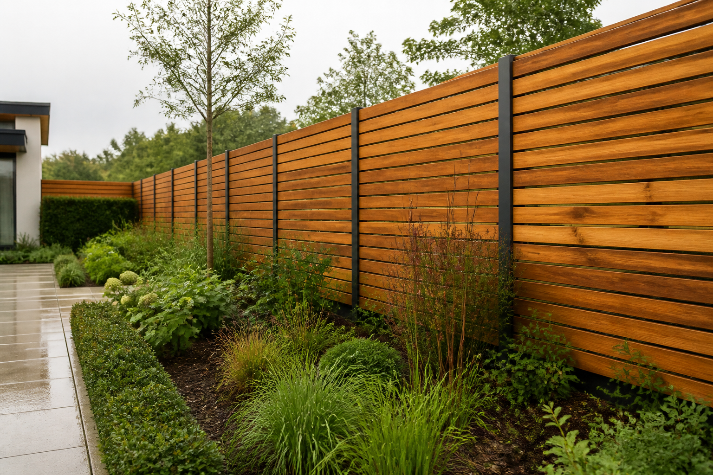
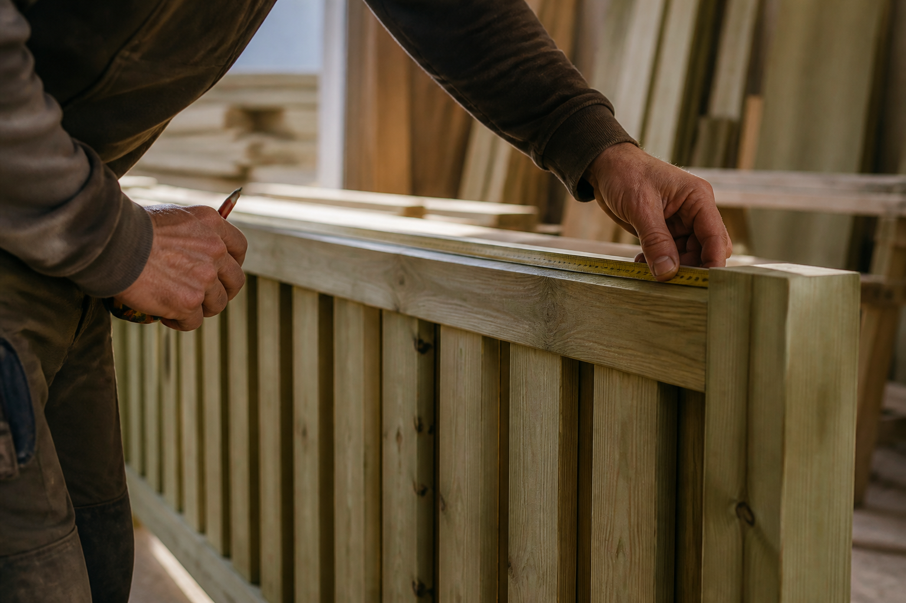

Irish timber · Over 30 years of experience
Where quality
meets style.
Quality fencing supplied and fitted across Kildare, Dublin, and the surrounding areas.

◇Pressure treated against rot
⌂Expert installation by our skilled team
◷Free consultations and estimates
From the LARK catalogue
Fencing for every
kind of garden.
Choose from timber, Smart fencing, PVC, composite, and concrete ranges.

Supplying Irish homes for over 30 yearsSupply only or fully fitted
Quality products, expert installation.
From our yard in Johnstown, LARK serves domestic and commercial customers throughout Kildare, Dublin, and surrounding areas.
- 01Free consultation
We help you choose the right privacy, security, and style for your space.
- 02Irish pressure-treated timber
Our timber is treated against rot for a longer-lasting garden boundary.
- 03Supply or installation
Choose complete professional fitting or collect the materials you need.
Why LARK Fencing?
A quality garden fence adds privacy, security, and lasting value while enhancing the beauty of your garden.
LARK FencingQuality products and service
Your garden, reimagined